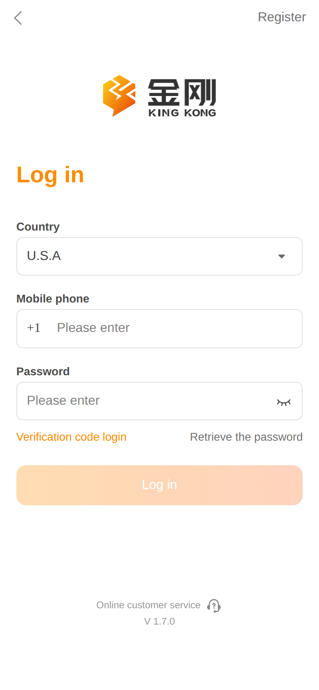
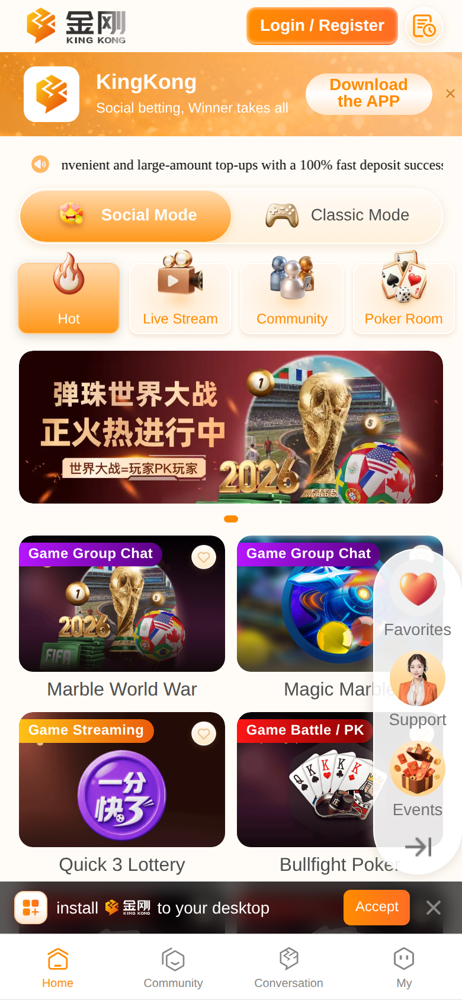

游戏首页是「多入口、多层导航、多悬浮层」并存。用户最自然的动作是选游戏，但首屏同时引导登录、下载 App、安装 PWA、咨询客服，主路径被拆散。另外 Social/Classic 模式切换后内容几乎不变，用户得不到操作反馈。
| 交互问题 | 优先级 |
|---|---|
| 5+ 入口同时竞争，主路径不清 | P0 |
| 模式切换无可见反馈 | P0 |
| 悬浮层遮挡游戏卡片 | P0 |
| 登录按钮状态不明确 | P1 |
| Community 在两处重复出现 | P1 |
① 顶栏：Login/Register ② 营销：Download APP（可关） ③ 公告：跑马灯（不可点） ④ 模式：Social ⇄ Classic ⑤ 分类：Hot / Live / Community / Poker ⑥ 内容：Banner + 游戏卡片 ⑦ 悬浮：收藏 / 客服 / 活动 ⑧ 阻断：PWA 安装条 ⑨ 导航：Home / Community / Conversation / My


首屏同时推：Login、Download APP、PWA Install、悬浮客服、游戏卡片。用户不知道第一步该做什么。
建议：未登录只保留「浏览游戏 → 点击卡片 → 登录引导 → 进入游戏」一条主路径；Download/PWA 放到 My 页或二次弹窗。
Social / Classic 切换后 Banner、列表、分类都不变，用户会以为点击无效。
建议：切换时更新可见内容 + 过渡动画，让「已切换」可感知。
右侧工具条挡住游戏卡片；底部安装条与 Tab 叠加，易误触。
建议：悬浮条收成 FAB；安装条改非阻断 Toast，关闭后记住选择。
Community 同时出现在分类按钮和底部 Tab，职责重叠。
建议：明确分工或合并入口，避免用户困惑「两个 Community 有什么区别」。
| 问题 | 建议 |
|---|---|
| 按钮像 disabled | 区分不可点 / 可点 / 加载中三态 |
| Register 难发现 | 移到 Log in 按钮下方 |
| 无即时校验 | 输入时提示格式错误 |
| Country 与区号 | 切换国家时区号同步变化 |
【当前】打开首页 → 同时看到 Login / Download / PWA / 游戏 → 路径分叉
【建议】打开首页 → 直接浏览游戏 → 点击卡片 → 登录弹层 → 进入游戏
↘ 顶部 Login（完整登录页）
↘ My 页内 Download / 添加主屏幕（次要）
| 优先级 | 改什么 | 用户感受 |
|---|---|---|
| P0 | 收敛首屏入口 | 「我知道该干嘛」 |
| P0 | 模式切换联动内容 | 「切换有反应」 |
| P0 | 悬浮层可收起 | 「点游戏不会误触」 |
| P1 | 点游戏 → 登录引导 | 「进游戏前知道要登录」 |
| P1 | 登录按钮状态清晰 | 「我知道能不能点」 |
| P2 | 收藏/分类切换 toast | 「操作有回应」 |